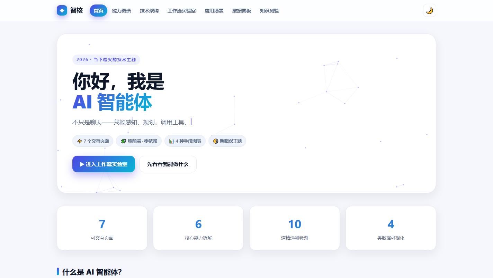
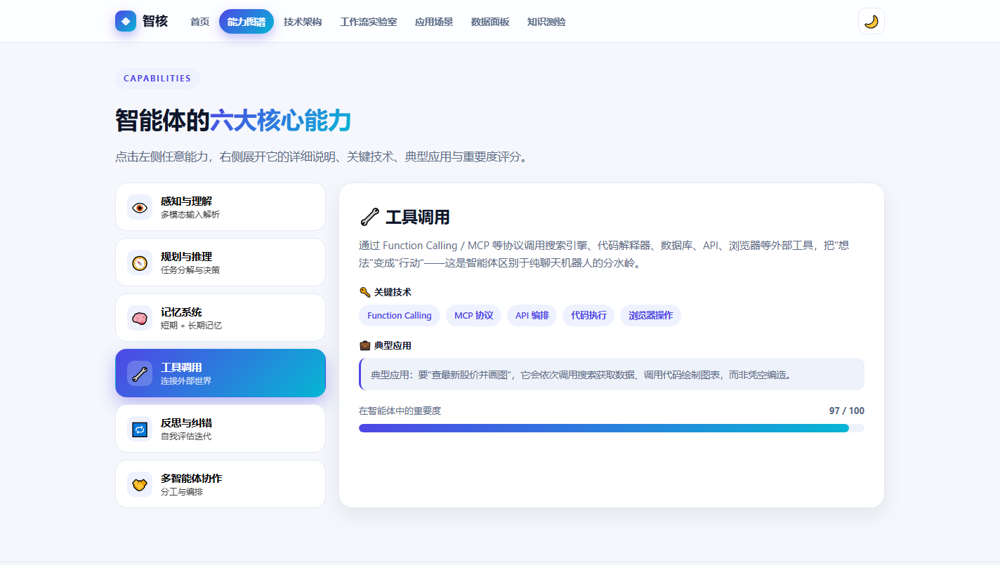
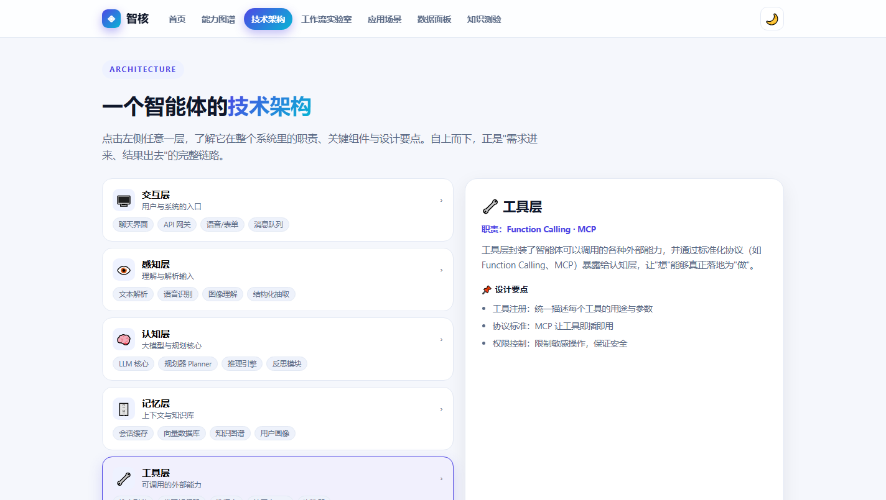
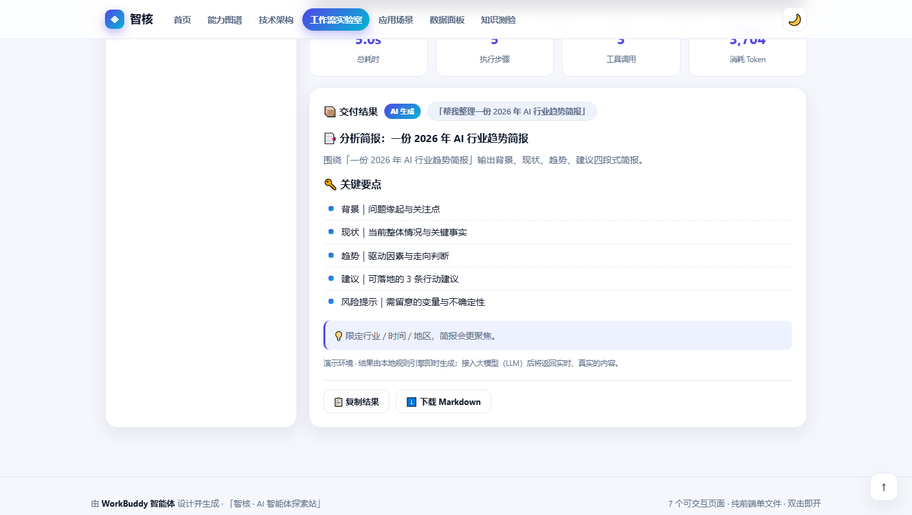
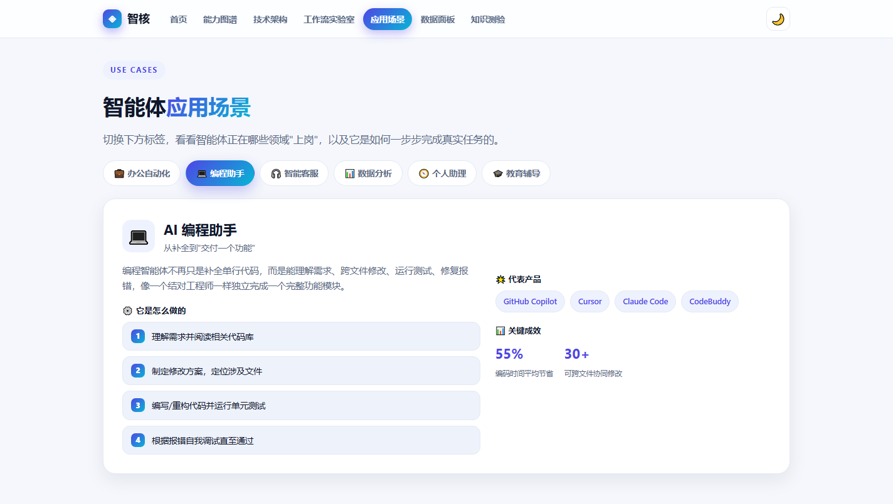
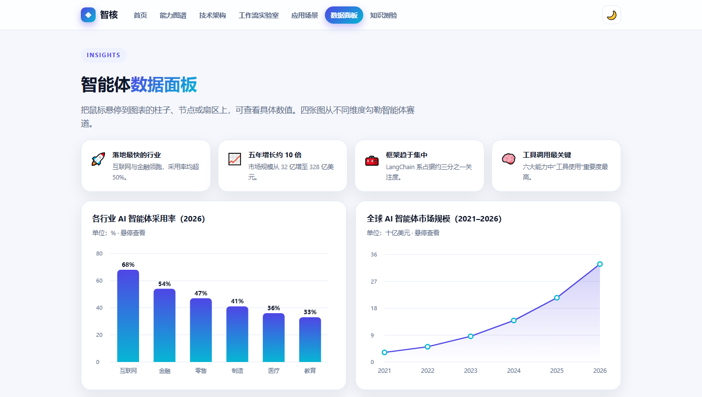
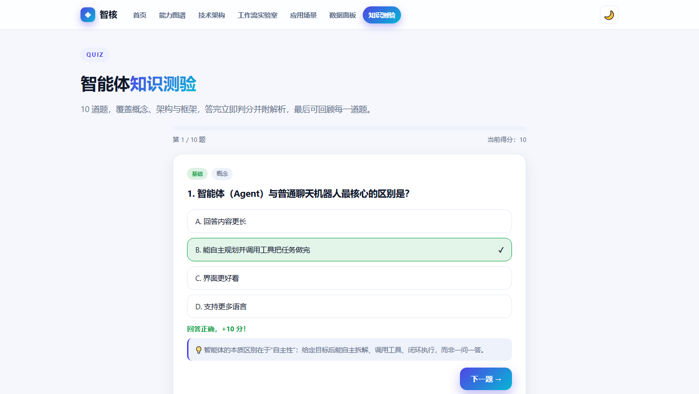

一个纯前端、7 页面的可交互网站。按下面 7 步，即可体验全部交互功能。
首屏是动态粒子背景 + 打字机动副标题 + 数字滚动统计，下方"什么是智能体""核心特征""发展简史"一应俱全。

智能体六大核心能力（感知/规划/记忆/工具/反思/协作），每个都附关键技术与真实应用示例。

把一个智能体的内部结构拆成六层，看清"需求进来、结果出去"的完整链路。

最核心的一页：亲手配置参数，亲眼看到智能体"感知→规划→记忆→工具→反思→输出"闭环，并且无论输入什么问题都会得到结构化交付结果，计算题直接算出答案。

每个场景都给出"它是怎么做的"分步流程、代表产品与关键成效数据。

四张纯 Canvas 手绘图表：行业采用率、市场规模、框架关注度环形图、能力重要度雷达图，附 4 张洞察卡片。

10 道题覆盖概念、技术与框架，分基础/进阶/挑战三档，做完成绩单可逐题回顾。
